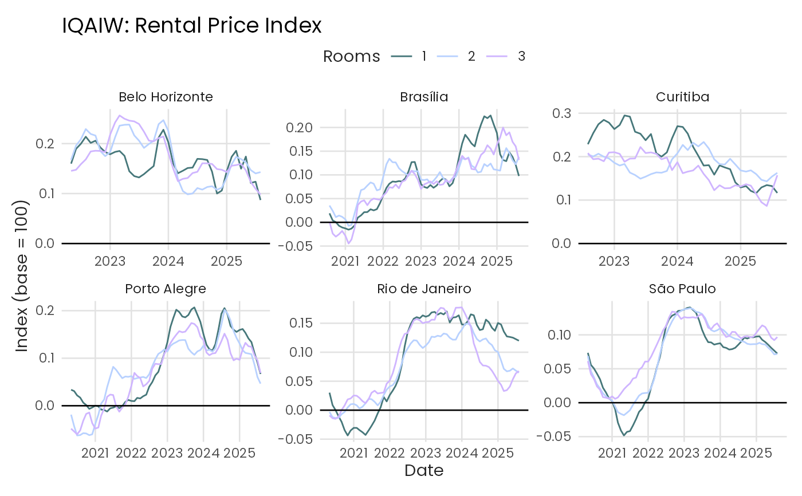

The IQAIW (Índice QuintoAndar ImovelWeb) is a rental index for major Brazilian cities. The index is based on both new rental contracts (managed by QuintoAndar) and online listings from QuintoAndar's listings (including ImovelWeb).
Format
A data frame with 1,660 observations across 6 cities and multiple time periods:
- date
Date of the observation (first day of month)
- name_muni
Name of the municipality. One of: Belo Horizonte, Brasília, Curitiba, Porto Alegre, Rio de Janeiro, São Paulo
- rooms
Number of rooms in the property, or "Total" for city-level aggregate
- index
Rental price index, normalized to 100 at first observation per city
- chg
Monthly percent variation of the index (decimal form)
- acum12m
12-month accumulated variation of the index (decimal form)
- price_m2
Estimated rental price per square meter (R$/m²)
Details
The IQAIW was developed in 2023 and replaced the former IQA index. Given the change in methodology and data sources, the IQAIW is not directly comparable to the IQA index.
Methodology
Formally, the index is a hedonic double imputed index, controlling for quality changes using a flexible GAM specification with location variables. In this sense, the IQAIW is more theoretically sound than median stratified indices like FipeZap or the former IQA. The mixture of listings and contracts, however, lacks theoretical support and seems to be mainly driven by branding purposes.
The ImovelWeb brand was purchased by QuintoAndar in 2021-22 and the IQAIW symbolizes the merging of both brands. In other words, the original IQA could've been improved simply by adopting a hedonic methodology, without the need to mix data sources.
Examples
# To visualize the dataset
head(iqaiw)
#> # A tibble: 6 × 7
#> date name_muni rooms index chg acum12m price_m2
#> <date> <chr> <chr> <dbl> <dbl> <dbl> <dbl>
#> 1 2019-05-01 Belo Horizonte Total 100 NA NA 19.2
#> 2 2019-10-01 Belo Horizonte Total 100. 0.00351 NA 19.2
#> 3 2019-11-01 Belo Horizonte Total 100. 0.00282 NA 19.2
#> 4 2019-12-01 Belo Horizonte Total 101. 0.00145 NA 19.3
#> 5 2020-01-01 Belo Horizonte Total 101. 0.00730 NA 19.4
#> 6 2020-02-01 Belo Horizonte Total 103. 0.0128 NA 19.7
str(iqaiw)
#> tibble [1,660 × 7] (S3: tbl_df/tbl/data.frame)
#> $ date : Date[1:1660], format: "2019-05-01" "2019-10-01" ...
#> $ name_muni: chr [1:1660] "Belo Horizonte" "Belo Horizonte" "Belo Horizonte" "Belo Horizonte" ...
#> $ rooms : chr [1:1660] "Total" "Total" "Total" "Total" ...
#> $ index : num [1:1660] 100 100 100 101 101 ...
#> $ chg : num [1:1660] NA 0.00351 0.00282 0.00145 0.0073 ...
#> $ acum12m : num [1:1660] NA NA NA NA NA ...
#> $ price_m2 : num [1:1660] 19.2 19.2 19.2 19.3 19.4 ...
# Plot index over time for all cities
library(ggplot2)
iqaiw_rooms <- subset(iqaiw, rooms != "Total" & !is.na(acum12m))
ggplot(iqaiw_rooms, aes(x = date, y = acum12m, color = rooms)) +
geom_line(lwd = 0.5) +
geom_hline(yintercept = 0) +
scale_color_benvi_d(pal_name = "qual_6", name = "Rooms") +
facet_wrap(vars(name_muni), ncol = 3, scales = "free") +
labs(
title = "IQAIW: Rental Price Index",
x = "Date",
y = "Index (base = 100)"
) +
theme_benvi()
